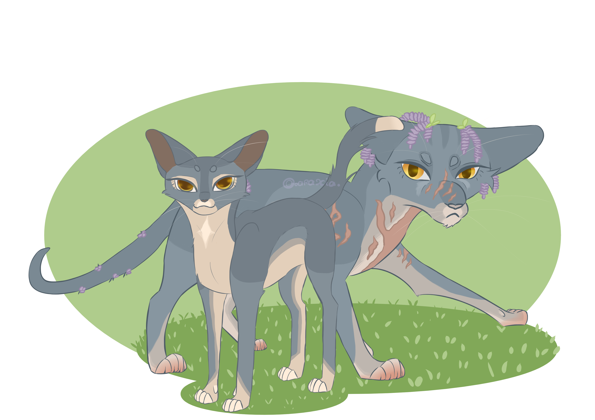

Nomenclature
Nom de Chaton : Petite Mygale
Nom d'Apprenti : Nuage de Mygale
Nom Adulte : Le meneur va choisir
Nom de Chef : Étoile de Mygale
Nom d'Ancien : Identique ou modifié
Caractère & Personnalité
Petite Mygale est une contradiction vivante. Elle veut aller vers les autres, apprendre d'eux, les comprendre, et pourtant, elle maintient toujours ce petit pas en arrière, cette distance imperceptible que peu arrivent à franchir. C'est peut-être ce qui la définit le mieux : une féline qui aspire à la connexion, mais qui a appris, très tôt, que les choses qu'on aime finissent toujours par disparaître.
Curieuse, parfois indiscrète, elle compense à sa façon le silence que sa mère a laissé derrière elle. Chaque réponse qu'on lui donne, chaque histoire qu'on accepte de lui raconter, est une petite pierre qu'elle pose pour reconstruire ce qu'elle n'a jamais eu. Elle apprécie qu'on lui réponde, même aux questions les plus naïves, surtout celles-là. Et sans le chercher, elle attire les regards. Quelque chose en elle retient l'œil, fascine, sans qu'elle fasse le moindre effort. Un port naturel, une façon d'exister dans un espace. Elle s'en accommode, même si ça la met mal à l'aise.
Mais derrière ce charisme discret se cache une féline qui ne se livre pas facilement. Méfiante, profondément convaincue que la loyauté se mérite plutôt qu'elle ne se donne, elle observe bien plus qu'elle ne parle. Ce qu'elle traverse, elle préfère le porter seule, et quand quelque chose ne va pas, elle se referme, disparaît dans son propre silence. Partager, pour elle, ressemble encore trop à une faiblesse.
Ce qui ne l'empêche pas d'être traversée, malgré elle, par des émotions qui la débordent avant même qu'elle ait eu le temps de les contenir. C'est ce qu'elle déteste le plus chez elle. Cette incapacité à rester de marbre, à garder la face en toutes circonstances. Elle essaie, pourtant. Elle essaie toujours.
Et quand elle décide quelque chose, rien ni personne ne la fera dévier. Têtue jusqu'à l'os, capable d'aller jusqu'au bout de ses idées qu'importe les obstacles, c'est à la fois ce qui la fait avancer, et ce qui, parfois, la perd.
Au fond, Petite Mygale est une survivante. Pas par choix, pas par fierté, juste parce que c'est ce qu'on lui a appris, dans un clan qui a lui-même appris à vivre avec rien. Elle ne s'effondre pas. Ou du moins, pas devant les autres. Et peu importe ce que la vie met en travers de son chemin, elle trouve toujours un moyen de s'en sortir. Même quand ce moyen n'est pas beau à voir.
Curieuse
N'ayant pas de mère pour lui raconter des histoires, répondre à ses questions, combler les silences... C'est sa façon à elle de reconstruire ce qu'elle n'a jamais eu.
Charismatique
Sans le chercher, elle attire les regards. On est facilement attiré par la jeune féline, quelque chose en elle retient l'œil sans le moindre effort.
Résiliente
Ayant grandi dans un clan qui a appris à survivre avec rien, elle a développé une résilience à toute épreuve. Elle ne s'effondre pas.
Aimante
Quand Petite Mygale aime quelqu'un, elle aime vraiment. Profondément, intensément, avec une sincérité qui peut surprendre. C'est une connexion unique.
Têtue
Quand elle a une idea en tête, elle ne l'a pas ailleurs. Rien ne la fera plier, rien ne la fera dévier. Elle ira jusqu'au bout, qu'importe les obstacles.
Méfiante
La loyauté se mérite. Elle ne se donne pas. Elle se montre très méfiante envers les autres, et encore plus envers ceux qui ne viennent pas de son clan.
Émotive
Ses émotions la submergent bien plus vite qu'elle ne le voudrait, la débordent avant même qu'elle ait eu le temps de les contenir. Elle déteste ça.
Repliée sur elle-même
Quand quelque chose ne va pas, elle se referme, disparaît un peu dans ses propres pensées, son propre silence. Elle préfère porter ses fardeaux seule.
❤️ J'aime beaucoup
Grands Espaces
Elle adore les espaces ouverts, les grandes étendues d'herbe et de vent pour courir sans limites.
Les Histoires
Elle aime qu'on lui raconte des histoires pour apprendre du vécu et des erreurs des autres.
Proies
Elle a un faible pour le lapin. C'est simple, c'est instinctif.
🖤 Je n'aime pas
Ombre d'un Fantôme
Elle ne supporte pas qu'on la compare à sa mère. Elle est elle. Rien d'autre.
Sous-Estimée
Elle ne supporte pas qu'on l'ignore, ni qu'on la regarde de haut pour son statut de survivante unique.
Proies
Le poisson. Catégoriquement. Sans appel.
Elle a peur de ne jamais exister vraiment pour elle-même. Peur de n'être qu'un reflet ou une continuation d'Éclat de Scarabée aux yeux du clan.
Elle est terrifiée par les espaces clos et les tunnels sombres. Mais elle doute : est-ce sa vraie peur, ou l'écho de la phobie de sa mère qu'on lui a trop racontée ?
Le Parler Chantant
Stressée, ses syllabes s'allongent et se font presque chantées. Un écho immédiat à Éclat de Scarabée.
La Démarche Flottante
Elle a hérité de l'élégance naturelle et flottante de sa mère, posant ses pattes comme si le sol était délicat.
La Fleur Rituelle
Elle glisse parfois des fleurs dans son pelage lors des événements, provoquant une vive nostalgie chez Harmonie des Prés.
Apparence Physique
Petite Mygale a un corps qu'on qualifierait de longiligne, fin, souple, léger. Pourtant, si on regarde de plus près, ce n'est pas toute l'histoire. On distingue des muscles, discrets mais présents, notamment sur le poitrail et les pattes. Elle n'est pas purement longiligne, après tout, elle a hérité de ses deux parents. Elle possède une longue queue, fine et souple, qu'elle aime laisser balancer derrière elle avec une nonchalance toute naturelle.
Son pelage est une beauté à part entière. D'un bleu chaud, presque fumé, avec des sous-tons sablés qui le réchauffent et le rendent absolument unique. Elle a hérité du ticking de sa mère, ce patron qui la rend si semblable à Lueur du Méloé que ceux qui l'ont connue s'y perdent parfois, le temps d'un regard. Deux détails la distinguent pourtant : le bout de sa queue est blanc, et une petite tache de même couleur orne son poitrail, un héritage discret de son père, posé là comme une signature. Son poil, légèrement plus dense que celui de sa mère, lui offre une maigre protection contre le froid. Maigre, mais présente.
Ce qui la rend vraiment singulière, c'est la forme de son museau, long, épais, bien différent de ce qu'on voit habituellement. Associé à ses oreilles, larges et écartées, perchées haut sur sa tête, elle a quelque chose d'atypique dans le visage. Quelque chose qui retient l'œil.
Ses yeux sont en amande, joliment soulignés par de longs cils gris foncés. Leur couleur, un ambre chaud, contraste avec le bleu fumé de son pelage d'une façon qui ne laisse pas indifférent.
En termes de taille, elle sera plutôt dans la moyenne une fois adulte. Elle figurera sans doute parmi les plus légères de son clan, ce genre de légèreté qu'on ne voit pas venir, et qui surprend toujours.
Vitesse
Son corps longiligne est fait pour aller vite. Elle court avec une aisance naturelle, une fluidité qui lui permet de se démarquer sur la lande, assez pour devenir l'une des meilleures chasseuses de lapin.
Agilité
Elle est souple, légère, précise. Son corps répond vite, change de direction sans effort apparent. Elle se faufile là où d'autres peineraient avec grâce.
Ouïe
Ses grandes oreilles captent tout, le froissement d'une herbe, le souffle d'un vent qui change, un son trop discret pour le commun des mortels.
Morsure forte
Son long museau lui confère une force de morsure surprenante au premier abord. Sa mâchoire est une arme à part entière.
Force Brute
Elle a la vitesse, pas la puissance. Dans un affrontement direct, au corps à corps, elle le paiera.
Résistance au Froid
La mauvaise saison la met à rude épreuve, et le froid la pénètre plus vite qu'elle ne le voudrait. Un héritage dont elle se serait passée.
Problème d’équilibre
La lande, oui. Les arbres, non. Grimper n'est pas fait pour elle, son corps la trahit dès que le terrain devient vertical.
Corpulence fragile
Son corps se marque vite. Les coups laissent des traces, les blessures arrivent facilement. Chaque cicatrice est durement gagnée.
Handicap
// Aucun
Accessoires
// Aucun
À voir dans le futur.Cicatrices
// Aucune
À voir dans le futur.
Histoire & Chroniques
Chapitre I : Les Fils du Deuil
Âge : 0 à 3 lunesÀ seulement trois lunes, Petite Mygale n'a pas encore de grandes épopées à inscrire dans les mémoires du clan. Elle n'a pas chassé de faucon, ni repoussé d'invasion. Pourtant, son histoire est déjà lourde, marquée au fer rouge par le deuil et la survie.
La tragedy a frappé très tôt. Ses frères sont partis les premiers, alors qu'ils n'avaient qu'une lune. Une maladie ? Une faiblesse ? Le Clan des Étoiles les a emportés en silence, sans laisser d'explications. Petite Mygale était trop petite pour comprendre la Faucheuse, mais elle a tout de même ressenti le froid du nid devenu trop grand pour elle seule.
Le coup de grâce est survenu à sa deuxième lune. Sa mère, Éclat de Scarabée, a rendu son dernier soupir pour rejoindre la Toison Argentée. Ce jour-là, la chatonne n'a pas eu besoin de mots pour comprendre : son cœur de bébé chat a enregistré ce vide immense, définitif, qui laisse un goût d'abandon dans la gorge.
C'est Harmonie des Prés qui est alors intervenue pour recueillir l'orpheline. Unique pilier, unique figure maternelle, elle l'a prise sous son aile avec toute la douceur et la bienveillance dont elle était capable. C'est à elle que Petite Mygale doit sa survie, ses connaissances actuelles et les quelques moments de pure tendresse qu'elle s'autorise à receive. Harmonie des Prés est son ancre dans la tempête, le seul fil qui la rattache à un semblant de foyer.
Chapitre II : Titre à venir...
Âge : En coursL'histoire s'écrira au fil du jeu de rôle et des rencontres de Petite Mygale sur le territoire...
Généalogie & Lignée
Origine : 100% Clan du Vent
I. Famille Maternelle

Bruissement du Moustique 🪦
Grand-mère (PNJ)
Aile de Cigale 🌫️
Grand-père (PNJ)Disparu de la lande.

Harmonie des Prés
Grande-Tante (PNJ)Sœur d'Aile de Cigale. C'est elle qui a recueilli et élevé Petite Mygale après la mort d'Éclat de Scarabée.

Éclat de Scarabée 🪦
Mère (PNJ)
Nuage de Luciole 🪦
Oncle (PNJ)II. Famille Paternelle

Étoile de Nuit 🪦
Grand-mère (PNJ)
Siffle Brise 🪦
Grand-père (PNJ)
Griffe de Silex
Père (PNJ)Un père totalement inconnu pour Petite Mygale, qui n'a laissé qu'une tache et un bout de queue blancs en héritage.

Éclat Sombre
Tante (PNJ)
Souffle de Brume
Oncle (PNJ)III. Famille d'Adoption

Prestesse de la Perdrix
Mère Adoptive (PNJ)Elle a ouvert son nid et offert sa protection à la petite après ses premiers jours difficiles.
Compagnon de Prestesse
Emplacement réservé pour un futur amant ou compagnon.
Adelphité d'Adoption
Emplacement réservé pour les futurs enfants ou portées de Prestesse.
IV. Adelphité

Petite Puce 🪦
Frère (PNJ)Parti à l'âge d'une lune.
Petite Noctuelle 🪦
Frère (PNJ)Parti à l'âge d'une lune.
V. Cousins & Cousines

Ombre de Nuit
Cousin (PNJ)Fils d'Éclat Sombre.

Aube de Givre
Cousine (PNJ)Fille d'Éclat Sombre.

Cri de l'Épervier
Cousin éloigné (PNJ)Fils d'Harmonie des Prés.

Envol du Bombyx
Cousine éloignée (PNJ)Fille d'Harmonie des Prés.

Chant de Cigale PJ
Cousine éloignée — @lavnd.13Fille d'Harmonie des Prés.
VI. Partenaire & Descendance
Aucun partenaire
Elle n'a que 3 lunes ! L'avenir nous le dira.
Aucune descendance
Pas de chatons ni de petits-chatons pour le moment.
Réseau de Relations
Les fils qu'elle tisse avec les chats de la lande au fil de ses rencontres
Index des Échelons

Étoile d'Ocre
❤️ · ⭐Il garde un œil sur Petite Mygale, car elle est l'enfant de l'ancienne guérisseuse, Éclat de Scarabée. Petite Mygale apprécie le meneur, elle aime bien lui poser des questions.
Chant de Cigale
❤️❤️❤️Apprentie de sa mère et sa cousine éloignée, Petite Mygale est très à l'aise avec la féline ! Elle aime énormément passer du temps avec elle, dans sa tanière.
Prestesse de la Perdrix
❤️ · ❤️🖤Sa mère adoptive, elle l'apprécie bien qu'elle ait encore un peu de mal avec elle, après tout sa mère adoptive lui met énormément de pression sur ses épaules. Mais au fond, Mygale l'aime beaucoup.
Galerie d'Art
Illustrations, croquis et designs officiels de Petite Mygale

